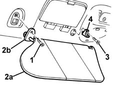

7065C34 l/h or r/h sun blind (one) - r+r
- Path
- Procedures > 70 FITTINGS > 7065 SEAT BELTS AND ACCESSORIES > 7065C ACCESSORIES AND DECORATIONS > 7065C34 l/h or r/h sun blind (one) - r+r
- Kind
- repair procedure (removal / refitting; the operation number is the code)
- Applies to
- all engines; all production periods
- Interactive page
- https://sloeber94.github.io/elrnDB-fMltpl/en/#/2892288
Applies to: all engines; all production periods
 Removing
Removing
 Refitting
Refitting1. Unscrew the sun blind retaining bolt.
2. Remove sun blind (2a) by releasing it from the retainer (2b).
3. If necessary, undo the bolt securing the support.
4. Remove the support.

Applies to: all engines; all production periods
Refitting
RemovingCheck that the sun blind and support are undamaged.
If previously removed, fit the support.
Refit the sun blind by clipping it into the retainer.
Tighten the sun blind retaining bolt.
Check that the sun blind works smoothly.
Topics that link to this page (12)
- 5505C41 cabin wiring - r r
- 7030B06 sliding rooves (assemblies) - r r
- 7030B11 sliding roof(assembly, 1 front or rear - r r )
- 7030B20 sliding roof glass front or rear - r r
- 7030B23 MOULDING/SUPPORT seal for SLIDING ROOF GLASS PANEL, Front or Rear - R.R.
- 7030B24 sliding roof blind,front or rear - r r
- 7030B66 sun-roof movement ecu - r+r
- 7030B74 sun-roof wiring harness - r r or replace
- 7035A14 OUTER WINDSCREEN MOULDING - R R
- 7035A18 WINDSCREEN GLASS R R INCLUDING CLEANING OF HOUSING
- 7040H10 roof panel lining - r r
- 7040H16 roof panel lining - r r